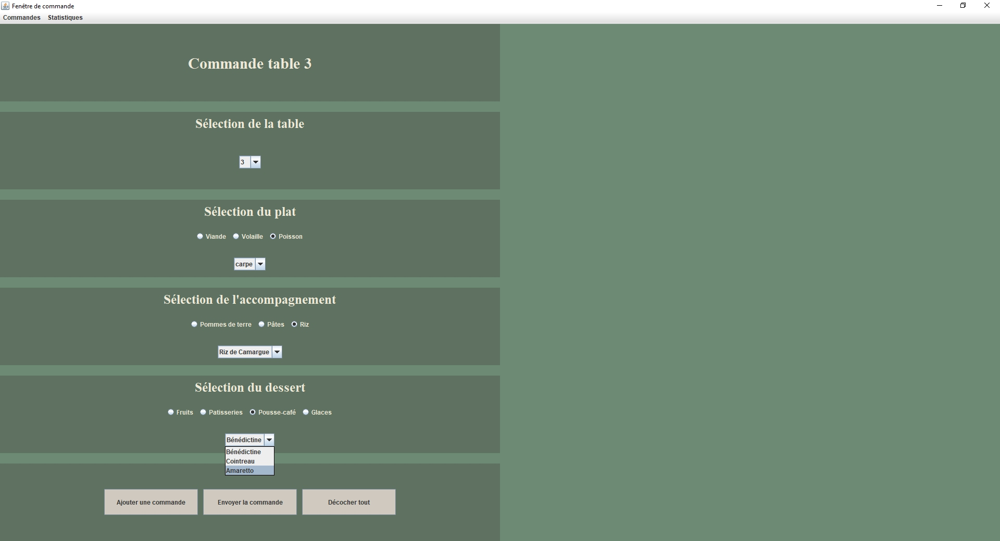
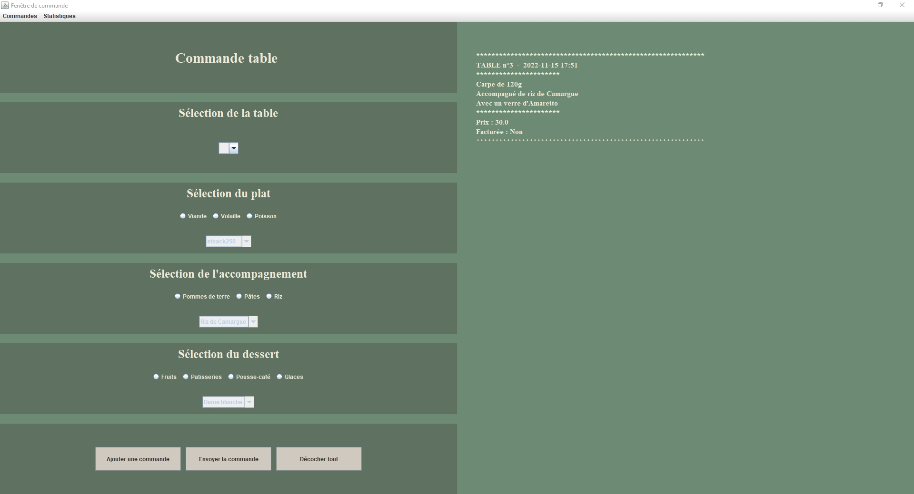
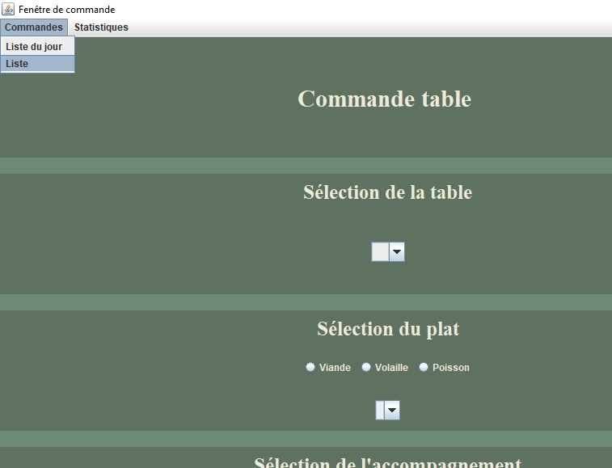
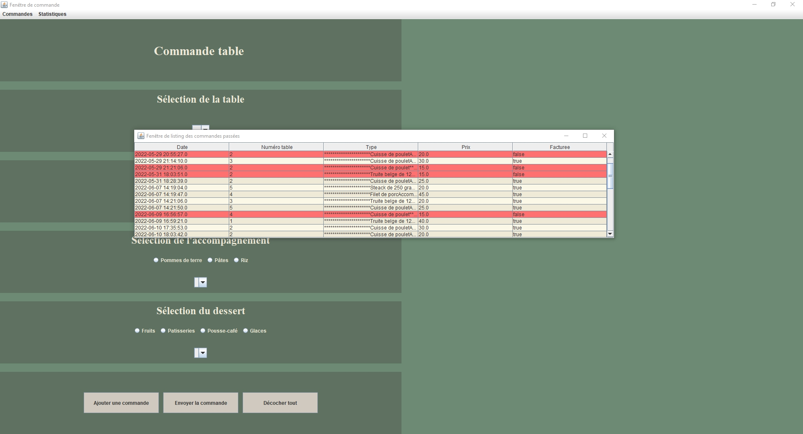
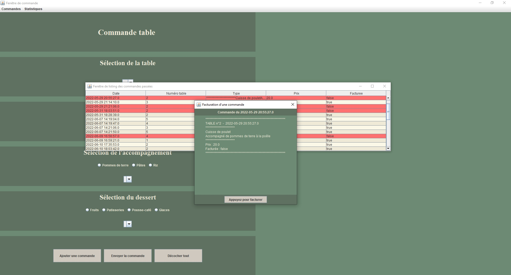
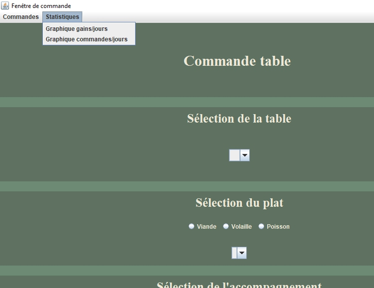
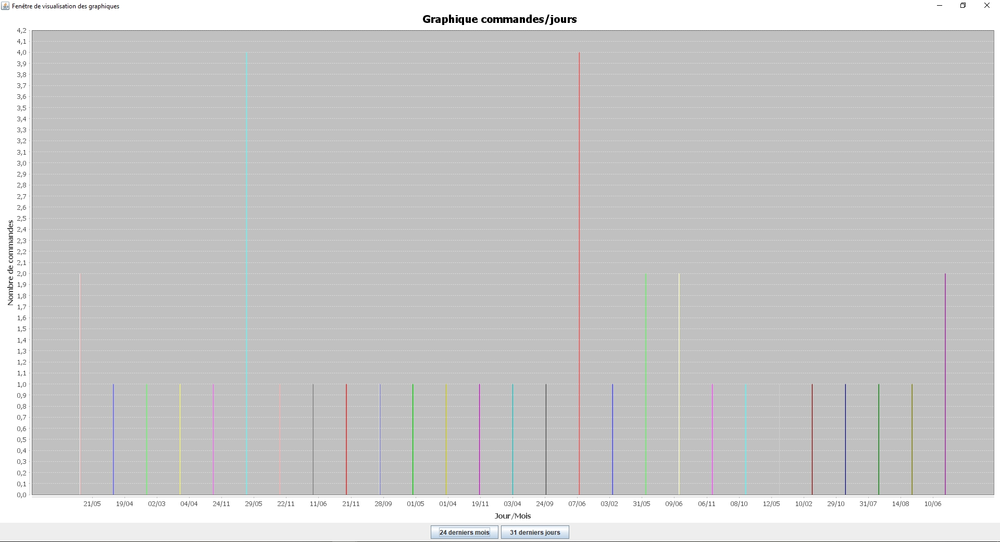
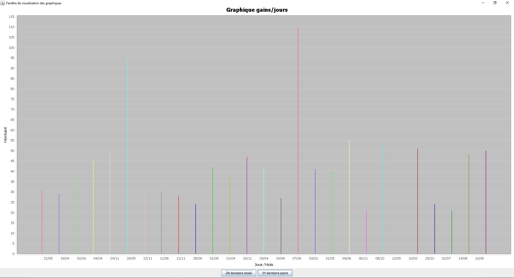
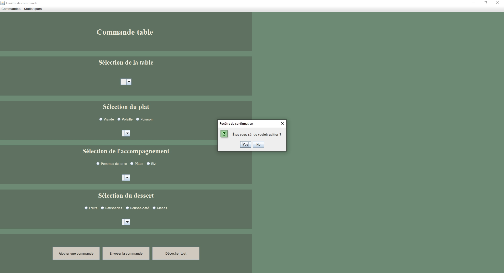

Java et SQL
NetBeans
En 2ème année de bachelier pour le cours de "Programmation orientée objet" (mai-juin 2022).
À partir des données contenues dans deux fichiers XML, ce programme permet de prendre la
commande d'une table de restaurant, de lister les commandes stockées dans la base de
données et de créer divers graphiques.
L'interface utilisateur a été conçue manuellement avec la bibliothèque graphique
Swing.
Menu principal du logiciel
 Menu principal du logiciel avec un repas choisi
Onglet "Commandes" du menu principal
Liste de la totalité des commandes passées à ce jour
Facturation d'une commande
Onglet "Statistiques" du menu principal
Graphique du nombre de commandes passées par jour lors des 24 derniers mois
Graphique des gains par jour obtenus lors des 24 derniers mois
